웹표준(Web Standard)
웹 접근성의 이해
1. 웹 접근성이란
- 웹 접근성의 정의 : 웹 콘텐츠라는 대상에 접근할 수 있는 능력
- 웹 접근성의 중요성
- 누구나, 어떠한 기술 환경에 구애받지 않음
- 전문적인 능력 없이 웹 사이트에서 제공하는 모든정보i>
2. 웹 접근성의 범위
- 웹 접근성의 좁은 의미 : 다양한 사용자 환경에서의 장애인, 보조기기, 보조기술
3. 웹 접근성 관련 용어
- 웹 접근성의 넓은 의미 : 기본적인 정의나 기대효과
- 웹 접근성의 지침
- "장애인 접근성" 중심으로 현재까지 ActiveX 사용
- 시각장애인등 다양한 장애유형별 사용자가 이를 키보드로 이용 가능함
- 대체수단을 통하여 음성 지원 등 다양한 방법으로 설치 및 이용할 수 있다면 웹 접근성을 준수한 것으로 인정
- 웹 표준, 웹 호환성, 오픈 웹
4. 정지 기능 제공
- 웹 표준 : 월드 와이드 웹 측면을 서술하고 정의하는 공식 표준이나 다른 기술 규격을 가리키는 일반적인 용어
- 웹 호환성
- 행정기관이 국민을 대상으로 함
- 전자정부 서비스 등의 웹 사이트를 사용자인 국내외에 거주하고 있는 국민
- 어떤 브라우저를 사용하든 웹 사이트에 접속하여 정상적인 서비스를 받을 수 있어야 함
- 오픈 웹
- 윈도와 인터넷 익스플로러를 통해서만 이용할 수 있는 대한민국의 전자정부와 온라인 뱅킹 서비스를 대상으로 함
장애인의 웹 사용과 장애인차별금지법
1. 장애인과 인터넷 이용환경
- 인터넷은 이동이 불편하거나 소통이 어려운 장애인 사용자에게는 웹 접근성을 높여 이용가능하도록 하는 것이 중요한 요소가 됨
2. 장애인차별금지법
- 정의
- 장애인 차별금지 및 권리구제 등에 관한 법률의 줄임 말
- 모든 생활 영역에서 장애를 이유로 차별을 금지하고, 장애를 이유로 차별받는 사람의 권익을 효과적으로 구제하기 위한 방법
3. 웹 접근성 의무적용 시기
- 웹 접근성 의무적용 대상
- 현재 시점에서 모든 웹 접근성을 의무적용
- 민간 일반 공연장 및 소공연장과 300석 이상의 영화상영관,사립박물관과 미술관 제외
- 웹 접근성 개선 및 장차법 적용 프로젝트들이 2010년부터 지속적으로 이루어짐
- 장애인차별금지법 미 준수 시
- 구제절차 : 국가인권위원회 - 법무부 - 민사상 손해에 대한 손해배상 청구 - 형사소송
- 진정 가능한 대상 : 누구나
- 입증책임 : 소명
- 장애인차별금지법 : '악의적'인지 '고의적'인지 판단필요
인식의 용이성 (1)
1. 대체 텍스트
- 대체 텍스트는 이미지의 alt속성 값을 이용해서 제공함
- 이미지의 내용이 복잡하거나 길어질 경우에는 longdesc속성을 이용하여 별도의 파일로 제공
- 가. 대체 텍스트의 이해
- (1)대체 텍스트의 개념
- 텍스트가 아닌 콘텐츠들 즉,이미지,이모티콘 문자,영상,음성 콘텐츠 등에 대하여 이를 텍스트 정보로 대체해주는 것
- 텍스트가 아닌 콘텐츠를 대체하여 제공하는 텍스트 정보
- 나. 대체 텍스트의 필요성
- (1)대체 텍스트의 목적
- 검사항목 1(대체 텍스트)
- 시각장애인에게 중요한 지표
- 이유 : 소리로 모든 내용을 이해하는 시각장애인에게 텍스트 정보가 음성으로 변환이 가능
- 음성으로 변환이 가능한 텍스트로 제공
- 임지가 제공되지 못하는 환경에서 대체 텍스트를 화면에 제시
- 검색엔진에서 이미지를 검색할 떼, 대체 텍스트를 검색포털에서 보여질 수 있는 조건으로 제시
- 라. 대체 텍스트의 제공방법
- (1)제공방법
- 기준 : 텍스트가 아닌 콘텐츠를 이요할 경우,해당 이미지가 제공하는 의미나 용도를 동일하게 인식할 수 있는 적절한 대체텍스트를 제공 시 준수한 것으로 인정
- (가)텍스트 이미지에 대체 텍스트를 미제공한 경우
- (나)불충분한 대체 텍스트를 제공한 경우
- (다)오타로 표기된 경우
- (라)<input type=“image”>에 대체 텍스트를 미제공한 경우
- (마)게시판 내용 중 이미지의 대체 텍스트를 미제공한 경우
- (바)블릿 이미지에 대한 대체 텍스트를 미제공한 경우
- 이모티콘의 내용을 텍스트로 함께 표기
- 이미지로 변환하고,대체 텍스트를 제공
- 줄임말에 사용되는 abbr태그를 활용
- (사)의미없는 이미지에 대한 대체 텍스트를 제공한 경우
- (아)여러 개로 분리한 이미지 조각의 대체 텍스트 제공
2. 멀티미디어 대체수단
- 동영상의 내용과 동일한 자막, 수화 또는 원고 등을 제공
- 실시간으로 제공하는 CCTV같은 영상은 제공하지 않음
- 가. 멀티미디어 대체수단의 이해
- (1)멀티미디어 콘텐츠의 개념
- 주로 음성을 포함하는 영상 또는 음성으로만 제공되는 콘텐츠 등
- 멀티미디어 콘텐츠의 대체수단은 음성정보를 대신하여 시각적인 정보인 자막이나 대본 또는 수화 등의 대체해주는 것
- 나. 멀티미디어 대체수단의 필요성
- 검사항목 2(자막제공)
- 청각장애인에게 중요한 지표
- 이유 : 영상 또는 음성 콘텐츠에서 제공되는 소리를 시각적 정보인 자막,대본,수화를 통해 인식
- 다. 멀티미디어 대체수단의 검사항목 해설
- “동기화된 자막”
- 비용과 현실이 고려
- 정보의 정확성과 한 화면에서 볼 수 있도록 제공
- 정보의 차별이 생기지 않도록 주의 : 청각장애인
- 파일로 제공되는 동영상과 음성 및 자막도 평가대상에 포함
- 닫힌 자막(Closed Caption)을 오디오와 동기화시켜 제공
- 즉시성이 필요한 경우,실시간 수화를 제공하거나 자막을 제공
- 라. 멀티미디어 대체수단의 제공방법
- (1)제공방법
- 기준 : 멀티미디어 콘텐츠를 동등하게 인식할 수 있도록 제작하기 위해서 자막,대본 또는 수화를 제공한 경우 준수한 것으로 인정
- (2)오류유형
- (가)영상,음성 콘텐츠에서 자막,대본,수화 중 하나 이상의 대체 수단을 제공하지 않은 경우
- (나)내용 전체를 충분히 설명하지 않고, 요약 정보나 제목만 제공하는 경우
- (다)텍스트만 제공하는 영상 콘텐츠에서 동등한 음성을 미제공 시
인식의 용이성(2)
1. 색에 무관한 콘텐츠 인식
- 가. 색에 무관한 콘텐츠 인식의 이해
- 1. 색에 무관한 콘텐츠 인식의 개념
- 정보를 구분하는 구별점을 색상으로만 하지 않고, 색을 배제하더라도 인식할 수 있도록 제공하는 것
- 나. 색에 무관한 콘텐츠 인식의 필요성
- 1. 색에 무관한 콘텐츠 인식의 목적
- 시력이 약한 사용자에게 색상이 아닌 다른 방식으로 구분할 수 있는 정보 제공
- 다. 색에 무관한 콘텐츠 인식의 검사항목 해설
- 도식 유형에 적용하던 검사항목 - 정보 인식(색상만구분)
- 페이지 네비게이션 - 정보인식(색상만구분)
- 라. 색에 무관한 콘텐츠 제공방법
- 1. 제공방법
- 기준 : 색을 배제하여도 해당 콘텐츠를 인식 할 수 있는 정보를 제공한 경우 준수한 것으로 인정
- 2. 오류 유형
- (가) 색상만으로 내용을 분별하도록 제공된 콘텐츠(그래프, 차트, 지도 등)
- (나)페이지 네비게이션, 메뉴, 현재 위치 등에 대해 명암,패턴 등의 변화 없이 색상의 변환만으로 현재의 위치를 표시한 경우
- (다)필수 입력 항목을 색으로만 표시한 경우
2. 명확한 지시사항 제공
- 가. 명확한 지시사항 제공의 이해
- 1. 명확한 지시사항 제공의 개념
- 지시사항을 전달하는 콘텐츠에 한정해 적용하는 것
- 무엇을 지시하는지 명확하게 하기 위해 목적이 분명한 지시가 되어야 하는 것
- 특정 감각에만 의존하지 않고 다른 감각을 통해서도 지시사항을 인식할 수 있도록 정볼르 제공하는 것
- 나. 명확한 지시사항 제공의 필요성
- 1. 명확한 지시사항 제공의 목적
- 특정한 감각에 장애가 있는 사용자가 웹 사이트에서 지시된 내용을 제대로 실행할 수 있도록 함
- 다. 명확한 지시사항 제공의 검사항목 해설
- 링크 텍스트가 아닌 이미지 텍스트로 만든 링크로 링크 텍스트의 내용과 똑같이 대체 텍스트로 제공하여 시작장애인들도 이해 가능
- 1. 제공방법
- 기준 : 지시사항 정보를 특정 감각에 의존하지 않고 다양한 감각을 통해 용도나 목적을 이해할 수 있도록 제공한 경우
- 라. 명확한 지시사항의 제공방법
- 2. 오류유형
- (가)색,크기,모양,방향 등으로만 정보를 제공한 경우
- (나)전달하고자 하는 지시사항을 소리로만 정보를 제공한 경우
3. 텍스트 콘텐츠의 명도 대비
- 가. 텍스트 콘텐츠의 명도 대비의 이해
- 1. 명도 대비의 개념
- 텍스트 콘텐츠와 배경 간의 명암의 차이
- 4.5대 1이상을 권장
- 명도 : 물체의 색이나 빛의 색이 지니는 밝기의 정도
- 나. 텍스트 콘텐츠의 명도 대비의 필요성
- 1. 텍스트 콘텐츠의 명도 대비의 목정
- 시력이 약한 사용자를 위한 지침으로 최소한의 명도 차이를 둠으로써 정보를 인식할 수 있도록 함
- 다. 텍스트 콘텐츠의 명도 대비의 검사항목 해설
- 본문 콘텐츠에 대해서만 적용
- 검사 적용 예외
- 단순히 장식 목적으로만 사용한 텍스트
- 로고 또는 상호와 같은 텍스트 이미지
- 마우스나 키보드를 활용하여 초점을 받았을 때 색이나 명도 대비가 변화하는 콘텐츠
- 사용할 수 없음을 표시하기 위하여 명도 대비를 낮춘 회색의 컨트롤이나 입력 서식 등
- 라. 텍스트 콘텐츠의 명도 대비 제공방법
- 1. 제공방법
- 기준 : 웹페이지 콘텐츠에 텍스트,이미지 텍스트 정보에 대해 폰트의 크기가 4.5:1 이상(18pt 이상),굵은 14pt 이상은 3:1이상의명도 대비를 제공하는 경우. 단, 화면 확대가 가능하도록 구현한 텍스트 콘텐츠(텍스트 및 텍스트 이미지)의 명도 대비는 3:1까지 준수로 인정
- 2. 오류 유형
- (가)텍스트의 규격 정보가 있으며,보통 크기(18pt 미만,또는 굵은 14pt 미만)의 텍스트가 4.5:1을 만족하지 않은 경우
- (나)텍스트의 규격 정보가 있으며,특세트의 크기가 18pt 이상, 또는 굵은 14pt 이상의 텍스트가 3:1을 만족하지 않은 경우
- (다)이미지 텍스트의 경우 폰트 종류와 상관없이 14pt 크기에 해당하는 18.66px. 미만인 경우 4.5:1 이상이거나,18.66px 이상인 경우 3:1 이상을 만족하지 않은 경우(굴은 14pt 기준은 적용하지 않음)
- 3. 주의사항
- 1. 본문은 콘텐츠 영역으로 제공된 텍스트 또는 정보를 제공하는 표,그래프 및 텍스트 이미지의 텍스트 내용을 의미
- 명도의 차이를 두어야 하는 대상 : 웹페이지 콘텐츠(전체)
- 장식적인 문구를 제외한 모든 텍스트에 대해서 명도 대비 줌
- 2. 텍스트 크기가 구분이 되지 않는 경우나 이미지 텍스트의 경우 글 모양과 상관없이 윈도우에서 14pt는 18.66px이고 18pt는 24px로 적용하며, 굵음의 여부와 상관 없이 14pt이상은 3:1이상,미만은 4.5:1이상의 명도 대비를 제공하는 경우 준수하는 것으로 인정
- MacOS는 pt와 px가 같음
- Windows의 표준 해상도 : 96dpi
- MacOS의 표준해상도 : 72dpi
- 3. 웹페이지 콘텐츠에 장식 목적으로만 사용한 텍스트, 로고 또는 상호와 같은 텍스트 이미지,마우스나 키보드를 활용하여 초점을 받았을 때 색이나 명도 대비가 변화하는 콘텐츠,사용할 수 없음을 표시하기 위하여 명도 대비를 낮춘 회색의 컨트롤이나 입력 서식등은 이 검사 항목의 적용을 받지 않음
- 장식목적으로 사용한 텍스트나 로고 등에 대한 이미지 텍스트와 비활성화를 나타내기 위해 명도를 낮추어 회색으로 적용하는 컨트롤이나 입력 서식은 명도 대비 검사 대상에서 제외
4. 배경을 사용 금지
- 가. 자동 재생 금지의 이해
- 1. 배경음의 개념
- 페이지에서 배경으로 제공되는 음성 정보
- (1) 자동으로 재생되는 배경음을 사용하지 않음
- (2) 배경음을 3초 미만으로 사용
- 나. 자동 재생 금지의 필요성
- 2. 자동 재생 금지의 목적
- 배경음으로 인해 화면낭독기의 음성이 방해받지 않게 하여 웹 콘텐츠를 인식 하능하도록 함
- 다. 자동 재생 금지의 검사항목 해설
- 배경음이 자동으로 재생되지 않도록!
- 3초 미만
- 배경음을 제어할 수 있는 수단을 웹 페이지의 첫 부분에 제공
- 라. 자동 재생 금지의 제공방법
- 1. 제공방법
- 기준 : 배경음 사용하지 않았거나 3초 이내 또는 바로 정지할 수 있는 배경음 콘텐츠를 사용한 경우
- 2. 오류 유형
- (가)웹 페이지에서 자동적으로 재생되는 3초 이상의 배경음(동영상,음성,음악 등)콘텐츠를 제공하는 경우
- (나)마우스 오버 또는 키보드 초점을 받아 자동적으로 배경음이 3초 이상 실행되는 경우
- 3. 주의사항
- 1. 3초 미만의 배경음은 예외
- 2. 자동적으로 재생되는 배경음의 지속시간이 3초 이상,제어 수단이 페이지의 가장 첫 부분에 제공되는 경우 준수한 것으로 인정
5. 콘텐츠 간의 구분
- 이웃한 콘텐츠가 테두리,기분선 서로 다른 무늬 등을 이용하여 시각적으로 구분되도록 제공한 경우 준수한 것으로 인정
5. 운용의 용이성(1)
1. 키보드 사용 보장
- 텍스트를 입력하기 위한 키보드 조작 이외에도 마우스로 이용할 수 있는 모든 기능에 대해 키보드로도 이용할 수 있도록 하는 것
- 키보드 사용 보장의 필요성
- 마우스를 이용하기 어려운 사용자가 키보드를 이용할 수 있도록 한다.
- 일반 사용자도 키보드로 더욱 빠르고 정확한 컨트롤이 가능해진다.
- 키보드 사용보장 검사항목 해설 (예외)
- 자유롭게 움직이는 아날로그적인 기능
- 시뮬레이션과 같은 콘텐츠
- 입체적인 시각화 기능
- 마우스를 끌어서 거리를 측정할 수 있는 기능
- 키보드 사용 보장 제공 방법
- 기준 : 모든 기능을 키보드로 접근가능하고, 사용 가능하도록 제공한 경우 준수한 것으로 인정
- 오류 유형 : 마우스가 제어할 수 있는 요소를 키보드로 제어할 수 없는 경우
- 오류 유형1 : 이미지에 oncliuck 자바코드 이벤트를 적용한 경우
- 오류 유형2 : 마우스에 대응되는 키보드 이벤트 핸들러를 적용하지 않아 키보드 접근이 안되는 경우
- 키보드 포커스 초점이 영역을 벗어나면 동작하지 않음 - 키보드 잉벤트 핸들러 추가
- 오류 유형3 : readonly 속성을 사용하여 키보드 접근이 안되는 경우
- 오류 유형4 : 마우스에 종속적인 자바코드를 사용한 경우
- 키보드로 3차 메뉴를 볼 수 없는 메뉴바
- 키보드로 2차 메뉴를 볼 수 있는 메뉴바
- 오류 유형 : 부가 어플리케이션 콘텐츠의 wmode값 설정으로 키보드 이용이 불가능한 경우
- wmode를 transparent로 지정하여 키보드가 접근하지 못하는 상태
- 플래시 콘텐츠 wmode 값을 window로 지정하여 수정
- 키보드 사용 보장의 주의 사항
- 1. 반드시 IE8에서 확인할 것
- 2. onkeypress, onkeydown, onkeyup 이벤트 핸드러를 사용하여 키보드로 제어가 불가한 경우 감점
- 3. 지리정보(GIS), 가상현실(VR) 콘텐츠의 경우 예외 인정하나 기타 인터페이스는 키보드만으로 사용할 수 있어야 함
- 4. 키보드로 탭 메뉴에서 탭1-탭2-탭3으로 이동하여 모든 탭 내용을 확인할 수 없는 경우 감점
- 5. onfocus="this.blur();"를 사용하는 경우 검사항목 8,9,19,에서 동시 감점
- 6. 플래시 콘텐츠의 wmode값을 transparent 또는 opaque로 지정하게 되면 화면낭독기로 인식이 불가함
2. 초점이동
- 키보드에 의한 초점은 논리적으로 이동해야 하며 시각적으로 구별할 수 있어야 한다.
- 초점 : 웹사이트에서 현재 위치하는 영역을 시각적으로 안내하기 위해 제공되는 형태로써 포커스 형태와 커서 형태 등으로 위치를 안내하는 것
- 시각장애인이나 상지장애인 등 키보드로만 웹 사이트 이용하는 사용자
- 현재의 초점의 위치를 이해하고 원하는 콘텐츠를 이용할 수 있도록 함
- 초점 이동 검사항목 해설
- 초점 시각화 - 검사항목 8 - 키보드가 접근할 수 없어서 초점 여부를 볼 수 없는 경우 = 키보드 사용보장 준수하지 못한 것
- 초점의 논리적 순서 - 검사항목 19 - 초점 안보이게 감추거나 정확하게 어떤 객체의 라인, 초점이 겹쳐 확인되지 않는 경우 = 초점 이동 준수하지 못한 것
- 초점 이동 제공 방법
- 기준 : 키보드 초점을 받은 링크, 컨트롤 및 입력 서식은 초점을 받지 않은 객체들로부터 구분될 수 있도록 제공한 경우 준수한 것으로 인정
- 오류 유형1 :초점의 이동순서가 논리적이지 않으며 일관성이 없는 경우
- Tab키와 Shift+Tab 키에 초점의 이동순서 논리적이지 않고 일관성 없는 경우
- 논리적 순서로 소스코드 배열하여 CSS를 활용하여 초점 개선
- 오류 유형2 : 초점 또는 키보드의 위치를 나타내는 요소가 시각적으로 표시되지 않은 경우
- onfocus="this.blur();"을 사용하여 초점의 시각적 표시를 막음
- onfocus="this.blur();"를 제거하여 개선
- 오류 유형3 : <area>요소의 진행 순서에 의미가 있으나 키보드 접근 순서가 의미와 일치하지 않은 경우
- <area>의 키보드 접근 순서가 의미와 일치하지 않은 경우
- 이미지 맵을 부서명과 그에 속한 '과' 계층의 순서로 소스 순서 바꿈
- 초점 이동의 주의사항
- onfocus="this.blur();"를 사용하는 경우 키보드 접근은 물론 초점의 시각적 구분이 불가하고, 의도하지 않은 초점변화가 실행되므로 검사항목 8,9,19에서 동시 감점
3. 응답시간 조절
- 조작 기능의 개념 조작 : 사용자의 입력 및 컨트롤을 조작할 수 있도록 하는 것
- 콘텐츠에 포함된 모든 컨트롤은 대각선 방향의 길이를 6.0mm이상으로 제공
- 조작 가능의 필요성
- 터치스크린을 채용한 기기를 이용하는 손 떨림이 있는 사용자와 시각 장애인도 컨트롤을 용이하게 찾아서 조작가능
- 키보드 사용 보장 제공 방법
- 링크,사용자 입력,기타 컨트롤 등의 안쪽 여백
- 링크,사용자 입력 및 기타 컨트롤은 테두리 안쪽으로 1픽셀 이상의 여백을 두고 이곳에서는 위치 지정 도구의 조작에 반응하지 않도록 구현하는 것이 바람직
- 조작 가능
- 제공방법
- 기준 : 웹 페이지에서 제공하는 모든 이웃한 컨트롤들은 개별적으로 선택하고 사용할 수 있도록 대각선 길이가 6.0mm 이상의 크기와 컨트롤의 안쪽 여백이 1픽셀 이상을 갖도록 제공한 경우
- 오류 유형
- 컨트롤의 크기가 대각선으로 6.0mm이상 제공하지 않은 경우
- 링크,사용자 입력,기타 컨트롤의 테두리 안쪽으로 1픽셀 이상의 여백을 제공하지 않은 경우
4. 정지 기능 제공
- 응답시간 조절
- 일반적인 사용자 수준에 맞추어 주어진 제한시간은 감각에 장애가 있는 사용자에게는 접근 방식에 따라 시간이 부족할 수 있음
- 적용된 제한시간을 멈추거나 회피할 수 있도록 하여 동등한 정보의 인식을 위해 보완
- 응답시간 조절의 검사항목 해설
- 제한된 시간이 일반적인 사용자를 위해 제시된 경우 응답시간 조절 예외 인정
- 제한된 시간이 일반적 사용자를 위한 것일 경우 장애인과 같은 사용자에게는 차별 요소가 될 수 있음
- 시간 제한이 있는 콘텐츠에 대해서도 정지,시간을 연장할 수 있는 기능을 제공해야 함
- 응답시간 조절 제공 방법
- 기준 : 시간제한이 있는 콘텐츠의 응답시간을 조절할 수 있도록 제공한 경우 준수한 것으로 인정
- 오류유형 : 페이지 재이동시 회피할 수 있는 수단을 제공하지 않은 경우
- 확인,취소 버튼 제공 및 충분한 시간 제공하여 개선
- 오류유형 : 제한 시간을 연장하는 방법에 제한 시간이 있는 경우
- 자동 로그인 시간을 연장을 하기 위해 특정 시간을 제공
- 로그인 연장 단축키 제공하여 개선
- 응답시간 조절의 주의사항
- 1. 원천적으로 콘텐츠의 이용에 따르는 시간 조절을 허용할 수 없는 콘텐츠는 예외로 인정
- 검사대상은 자동전화 페이지(Redirection page), 제한시간 연장, 제한시간 만료 경도 등이 해당됨
6. 운용의 용이성(2)
1. 깜박임과 번쩍임 사용제한
- 깜빡임과 번쩍임 사용의 이해
- 1. 깜빡임과 번쩍임 사용 제한의 개념
- 초당 3~50회 주기로 깜빡이거나 번쩍이는 콘텐츠를 제공하지 않아야 함
- 대상 - 초당 3~50회 주리골 깜빡이는 콘텐츠
- 유의점 - 광과민성 발작 일으킬 수 있음
- 대안 - 사전에 경고,제작하지 않게 해야 함
- 나. 깜박임과 번쩍임 사용 제한의 필요성
- 1. 목적
- 어린이 또는 광과민성 발작 증세가 있는 사용자를 위함
- 다. 깜박임과 번쩍임 사용 검사항목 해설
- 초당 3~50회 주기로 깜빡이거나 번쩍이는 영상 콘텐츠는 제공하지 않거나 사전에 경고해야함
- 라. 깜박임과 번쩍임 사용 제한 제공 방법
- 1. 오류 유형 분석
- (가)사전 경고 없이 초당 3~50회 깜빡이는 콘텐츠가 존재할 경우
- 2. 주의 사항 분석
- (가) 깜빡임을 중단할 수 있는 수단을 제공했어도 깜빡임을 미리 경고하지 않은 경우 감점
- (나) 깜빡임이 3초 미만인 경우 인정
- (다) 동영상 콘텐츠도 검사 대상
2. 반복영역 건너뛰기 제공
- 가. 반복 영역 건너뛰기 제공의 이해
- 1. 반복 영역 건너뛰기 제공의 개념
- 콘텐츠의 반복되는 영역은 건너뛸 수 있어야 함
- 나. 반복 영역 건너뛰기 제공의 필요성
- 시각 및 상지 장애인들이 마우스 사용자와 같이 원하는 콘텐츠로 쉽게 접근할 수 있게 하기 위함
- 다. 반복 영역 건너뛰기 제공의 검사항목 해성
- 대메뉴와 같이 반복되는 영역이 있는 경우 바로 건너 뛸 수 있도록 건너뛰기 링크를 제공해야 하며,반복되는 영역이 아닌 경우에는 없어도 됨
- 라. 반복 영역 건너뛰기 제공 방법
- 1. 오휴 유형 분석
- (가)건너뛰기 링크를 제공하지 않은 경우
- (나)건너뛰기 링크는 제공하고 있으나 동작이 안 되는 경우
- 2. 주의 사항 분석
- (가)지나치게 많은 건너뛰기 링크를 제공하지 말 것(3내 이내 권장)
- (나)건너뛰기 링크에 키보드 접근이 불가한 경우 검사항목 8, 14에서 감점
- (다)건너뛰기 링크는 display:none등으로 감추지 않고, 화면에서 볼 수 있도록 제공하는 것을 권장
- (라)부가적인 건너뛰기 링크가 동장이 안 되는 경우 또는 건너뛰기 링크가 필요 없음에도 제공하여 동작되지 않은 경우도 감점
- 불필요하게 제공된 건너뛰기 링크라 하더라도 기능이 동작하지 않으면 감점의 요인
- (마)링크의 수가 많거나 메뉴나 링크 등의 반복되는 콘텐츠가 많은 복잡한 페이지일 경우에만 반복 영역 건너뛰기가 필요
- 메뉴의 수가 적거나 반복될 정도의 콘텐츠가 아닌 경우에는 반복 영역 건너뛰기를 굳이 제공할 필요 없음
3. 제목 제공
- 가. 제목 제공의 이해
- 1.제목 제공의 개념
- 페이지, 프레임, 콘텐츠 블록에는 적절한 제목을 제공해야 함
- 웹 페이지 제목 - 페이지에 접근할 때 가장 먼저 이해할 수 있는 중요 주제
- 나. 제목 제공의 필요성
- 각각 해당 콘텐츠가 어떤 내용을 담고 있는지 미리 짐작할 수 있게 하기 위함
- 다. 제목 제공의 검사항목 해설
- 모든 페이지와 프레임에는 해당 페이지와 프레임의 적절한 제목을 제공해야 함
- 라. 제목 제공 방법
- 1. 오류 유형 분석
- (가) 페이지 제목의 title 속성을 제공하지 않았거나 내용과 다른 의미의 제목을 사용한 경우
- (나) 페이지 제목에 반복되는 툭수문자를 제공한 경우
- (다) 페이지 제목의 분류가 더 가능함에도 불구하고, 상위 범주로 제목을 제공한 경우
- (라) <frame>,<frameiframe>,<frameframeset> 요소의 title 속성이 없거나, 속성 값을 비워둔 경우 또는 내용이 부적절한 경우
- (마) 내용 또는 기능이 없는 프레임에 <frametitle>을 비워두거나, 제공하지 않은 경우
- (바) 콘텐츠 블록(본문영역에 포함된 콘텐츠들의 제목)에 <h1~h6>을 사용하여 제목을 제공하지 않은 경우
- 2. 주의 사항 분석
- (가) 프레임 제목은 프레임 내에 포함된 콘텐츠를 유추할 수 있는 간결한 제목을 제공
- 적잘한 제목 - 간결하게 목적, 용도를 알 수 있게 제공
- 부적절한 제목 - 위치나 상대적인 개념 제공
- (나) 내용 또는 기능이 없는 프레임에도'빈 프레임','내용없음'과 같이 title을 제공해야 함
- (다) 게시판의 '목록,읽기,쓰기' 페이지의 제목을 읽기 (해당 글의 제목), 쓰기 등으로 구분하여 제공하는 것을 권장합니다.
4. 적절한 링크 테스트 제공
- 가. 적절한 링크 텍스트 제공의 이해
- 링크 텍스트는 용도나 목적을 이해할 수 있도록 제공해야함
- 텍스트를 링크가 감싸고 있어 선택을 하는 경우 해당 링크로 이동시킬 수 있는 기능
- 나. 적절한 링크 텍스트 제공의 필요성
- 1. 목적
- 링크 텍스트 - 텍스트 정보 통해 목적이나 용도를 잘 제공
- 해당 내용을 잘못 이해해 생긴 사용자 실수, 번거로움 줄여줄 수 있음
- 다. 적절한 링크 텍스트 제공의 검사항목 해설
- 상기 항목을 오류 없이 제공한 경우 준수한 것으로 인정
- 라. 적절한 링크 텍스트 제공 방법
- 1. 오류 유형 분석
- (가) 목적이나 용도를 알기 어려운 링크 텍스트를 제공한 경우
- 2. 주의 사항 분석
- (가) 링크의 목적을 키보드의 순서나 문맥을 통해 이해할 수 있으면 인정
- 직접적으로 링크 텍스트를 제공해주는 것이 좋습니다.
- (나) 링크 텍스트를 단순히 URL경로로만 제공하지 않는 것을 권장
- 적절한 링크 텍스트는 목적과 용도를 설명하는 내용을 링크로 연결하는 것이 좋습니다.
7. 이해의 용이성(1)
1. 기본 언어 표시
- 가. 기본 언어 표시의 이해
- 나. 기본 언어 표시의 필요성
- 1. 목적
- 다양한 언어를 공부하거나 이용하는 사용자에게 중요한 지표
- 다. 기본 언어 표시의 검사항목 해설
- 중간에 언어가 바뀌는 경우 lang 속성을 통해 언어를 바꿔주면 더 이해하기 좋은 사이트가 됩니다.
- 기본 언어 표시는 화면 낭독 프로그램과 같은 보조기기에서 기본 언어에 맞는 TTS(Text To Speech) 엔진 가동시키는 역할을 함
- 라. 기본언어 표시 제공 방법
- 웹 페이지에서 주로 사용하는 언어를 (html)에 lang속성을 사용하여 제공한 경우 준수한 것으로 인정
- 1. 오류 유형 분석
- (가) <html>에 lang 속성을 명시하지 않거나 잘못 명시한 경우
- 2. 주의 사항 분석-1
- 기본 언어는 페이지의 상단에 html태그에 lang 속성을 이용하여 지정하고, lang의 속성 값에는 ISO 639-1에서 지정한 두 글자로 된 언어 코드를 사용해야 함
- 2. 주의 사항 분석-2
- 페이지 중간에 언어가 바뀔 때 변경된 언어를 lang 속성으로 명시해주는 것을 권장
2. 사용자 요구에 따른 실행
- 가. 사용자 요구에 따른 실행의 이해
- 1. 사용자 요구에 따른 실행
- 사용자가 의도하지 않은 기능은 실행되지 않아야 함
- 나. 사용자 요구에 따른 실행의 필요성
- 1. 사용자가 의도하지 않은 새창이나 초점 변화를 일으키지 않도록 함
- 2. 해당 사항 발생할 경우 사전에 내용을 알려주어 콘텐츠 움직임에 문제 없게 하고, 콘텐츠 이용에 이해를 높임
- 다. 사용자 요구에 따른 실행의 검사 항목 해설
- 상기 항목을 오류 없이 제공한 경우 준수한 것으로 인정
- 라. 사용자 요구에 따른 실행 제공 방법
- 1. 오류 유형 분석
- (가) 사용자가 실행하지 않은 상황에서 예측하지 않은 새 창이 열리는 경우
- (나) 버튼 또는 링크 등을 실행할 때 사전에 알리지 않고 새 창이 발생되는 경우
- (다) 웹 사이트 초기화면에 팝업 창(레이어 팝업)을 제공하는 경우
- (라) 사용자가 의도하지 않은 초점 변화가 발생하는 경우
- (마) 체크상자의 선택, 텍스트 입력 서식의 값 변경만으로 값이 제출되어 문맥이 바뀌는 경우
- 2. 주의 사항 분석
- (가) onkeypress에 의해 포커스를 옮기는 동작만으로 새 창이 발생하면 감점
- Tab키에 의해서 새 창이 뜨는 등 의도하지 않은 실행 주의
- (나) <a target="_blank">로만 새 창을 알린 경우 감점하지 않음
- 가장 정확한 기준으로 표준 문법이 중심적 역할을 하는 것이 좋음
- (다) onfocus="this.blur()"를 사용하는 경우 검사항목에서 감점
- 키보드 접근 불가
- 초점의 시각적 구분 불가
- 의도치 않은 초점변화
- (라) 플래시 등에서 제공하는 새 창에서도 Name, Description 값에서 새 창 안내에 대한 내용을 포함하지 않으면 감점
- 플래시 등에서 제공하는 새창 - 새 창 안내에 대한 내용 포함 (X) - 감점
- (마) 오류 정정을 위한 자동 초점 변경은 예외
- 오류 발생 - 오류 해결 위한 자동 초점 이동 - 의도치 않은 실행 아님
8. 이해의 용이성(2)
1. 콘텐츠 선형화
- 가. 콘텐츠 선형구조의 이해
- 1. 콘텐츠 선형구조의 개념
- 웹 문서를 제작할 때 뼈대가 되는 HTML 마크업 언어
- 논리적인 순서에 맞게 개발 - CSS 적용
- CSS 제거 시, 콘텐츠가 상식적인 순서로 제공되고 있는가 확인합니다.
- 나. 콘텐츠 선형구조의 필요성
- 1. 콘텐츠 선형구조의 개념
- 1. 논리적인 순서로 CSS 제거
- 2. CSS를 제거하기 전의 초점 이동과 논리적 순서의 일치
- 다. 콘텐츠 선형구조의 검사항목 해설
- 일반 윈도우 커서와 가상 커서의 순서를 맞춰주는 것과 같음
- 논리적인 순서로 초점 이동 + 문서의 구조와 표현을 분리
- 라. 콘텐츠 선형구조 제공방법
- 1. 제공방법
- 기준 - 콘텐츠 순서가 논리적으로 선형화되어 제공 시 인정
- 2. 오류 유형
- (가) 계층 구조가 명백하게 필요한 콘텐츠를 중첩 마크업을 이용하여 표현하지 않은 경우
- <ul>과 <li>의 활용 - 콘텐츠를 마크업하여 제공
- (나) '제목-내용' 으로 구성된 콘텐츠 목록의 배치가 분리되어 내용을 직관적으로 이해할 수 없는 경우
- 3. 주의사항
- 1. 탭메뉴에서 탭1-탭2-탭3으로 이동하여 모든 탭 내용을 확인할 수 있는 경우에도 보다 논리적으로 구성
- 2. 2단계의 깊이를 가진 메뉴에서 1차 메뉴와 2차 메뉴, 탭 메뉴와 탭 콘텐츠는 서로 다른 계층으로 표현되어야 함
- ex) ul > li > ul > li 또는 ol > li > ol > li
- 3. 탭 메뉴와 탭 콘텐츠의 계층 구조는 경우에 따라 마크업 중첩이 아닌 '제목-내용'으로 표현이 가능함
- hx-ul, hx-div, hx-p, dt-dd 형식으로 마크업 했다면 계층구조로 인정함
- 제목 영역 : <h1~h6>, 정의형 목록의 <dt>
- 내용영역
- <ul>, <div>, <p>
- 정의형 목록에서의 <dd>로 구성한 경우
- <h1~h6> 요소를 이용하여 제목을 제공하는 것이 제목과 내용을 구분에 명확함
- 4. 로그인, 회원가입 등의 방법 안내는 로그인, 회원가입 이전에 정보를 제공할 것
- 메시지를 먼저 읽게 하기 위해 마크업 순서 상 로그인 폼 보다 먼저 제공하더라도 웹 화면에서는 CSS를 활용하여 로그인 폼 아래 위치시켜야함
- 5. 선형화된 페이지에서 서브메뉴가 우측에 위치하는 경우 등 혼란이 없는 경우는 인정
- 원칙 : 좌 - 우
- CSS를 활용하여 서브메뉴와 같은 위치를 변경할 수 있도록 인정
2. 표의 구성
- 가. 표의 구성의 이해
- 1. 표의 구성의 개념
- 데이터 간의 상관관계를 요역하여 제공하는 정보
- 제목과 요약을 제공
- 나. 표의 구성의 필요성
- 1. 표의 구성의 개념
- 제목셀과 내용셀을 짝지어 읽게 하거나 표에 대한 설명 정보를 미리 확인할 수 있도록 함
- 다. 표 구성의 검사항목 해설
- 데이터 테이블
- 본래 데이터의 상관관계
- 표의 형식을 제거하고 남아있는 데이터를 나열했을 때 이해할 수 없음
- 제목셀과 내용셀로 구분하며, 표의 제목과 요약을 제공
- 레이아웃용 테이블
- 디자인적인 배치를 위해 사용
- 표의 형식을 ㅔㅈ거하고 남아있는 데이터를 나열했을 때 이해할 수 있음
- 라. 표의 구성 제공방법
- 1. 제공방법
- 기준 - 표를 이해할 수 있도록 정보를 제공한 경우
- 2. 오류 유형
- (가) <caption> 요소, summaary 속성을 제공하지 않거나 용도 또는 설명이 부적절한 경우
- (나) 데이터 테이블에 제목 셀과 내용 셀을 <th>와<td> 요소로 구분하지 않은 경우
- (다) 복잡한 표 제공시 id, headers 또는 scope로 제공하지 않은 경우
- 3. 주의사항
- 1. 원칙적으로 <caption>요소와 summary속성을 모두 사용해야 하며, 이 중 하나이상 적절히 제공한 경우 준수한 것으로 인정
- 2. <caption>요소는 표의 제목을, summary속성에는 표의 요약, 구조나 탐색 방법을 기술해 주어야 함
- summary와 caption을 같은 용도로 사용하지 않아야 함
- 복잡한 표일 경우, 해당 표를 어떻게 탐색하면 편리한지 등을 담아야 함
- 행열 등의 정보는 오히려 중복된 정ㅇ보를 제공하게 되니 주의해야 함
- 3. 데이터 테이블은 자료들 간의 논리적인 관계를 나타내기 위한 경우로, 표의 형식을 제거하고 선형화 했을 때 이해할 수 없음
- 4. 레이아웃용 테이블은 화면 배치를 위해 작성된 경우로, 표의 형식을 제거하고 선형화했을 때 이해 가능한 경우
- 5. 레이아웃용 테이블에는 <th>, <caption>요소, summary속성을 사용하지 않아야 함
3. 레이블 제공
- 가. 레이블 제공의 이해
- 1. 레이블의 개념
- 입력서식이나 편집창과 같은 폼의 요소에 대한 목적이나 용도 (=꼬리표,라벨)
- 나. 레이블 제공의 필요성
- 1. 레이블 제공의 목적
- 운동장애가 있는 분들은 입력 폼으로 진입할 수 있도록 하며, 화면낭독기 사용자들에게는 입력서식의 이해를 용이하도록 함
- 다. 레이블 제공의 검사항목 해설
- <label>의 for와 폼 요소의 id를 연결
- 모든 콘텐츠가 id와 for만으로 연결할 수 없는 경우도 있음
- 라. 레이블 제공의 제공방법
- 1. 제공방법
- 기준 - 입력 서식에 대응하는 레이블을 제공한 경우
- 2. 오류 유형
- (가) <input>, <textarea>, <select>요소에 1:1 대응하는 <label>요소 또는 title속성을 제공하지 않은 경우
- (나) <input>의 id와 <label>의 for가 다르거나, 페이지 안에 같은 id가 있는 경우
- (다) <select>요소의 첫 번째 <option>이 레이블 역할을 대신하는 경우
- 3. 주의 사항
- 1. 레이블로 연결할 텍스트가 있는 경우 title 속성보다 <label>요소를 제공하는 것을 권장함
- 운동장애가 있는 사용자에게 사용성을 높여 줌
- title을 제공하게 되면 폼요소의 서택범위가 제한적이므로 접근성이 떨어짐
- 2. id, for속성을 사용하지 않고 <label>요소로 레이블 텍스트와 서식 컨트롤을 한번에 묶는 암묵적인 방법을 사용한 경우도 인정하지만 권장하지 않음
- 암묵적 방법
- <label><input type="checkbox">암묵적</label>
- 명시적 방법
- <label for="see">명시적</label><input type="checkbox" id="see">
4. 오류 정정
- 가. 오류 정정의 이해
- 1. 오류 정정의 개념
- 오류들에 대하여 정정할 수 있도록 오류의 내용을 알려주고, 오류의 위치에서 수정할 수 있도록 하는 것
- 나. 오류 정정의 필요성
- 다. 레이블 제공의 검사항목 해설
- 오류입력 항목에 정정 방법 제공.
오류 항목 초점이 자동으로 이동
- 라. 오류 정정의 제공방법
- 1. 제공방법
- 기준 - 입력 오류를 정정할 수 있는 방법을 제공한 경우
- 2. 오류 유형
- (가) 입력 서식을 잘못 작성한 경우 해당 서식 필드로 초점을 이동할 수 있는 수단을 제공하지 않거나 해당 서식의 전송버튼을 눌렀을 때, 입력 내용이 모두 사라지는 경우
- (나) 오류 발생 시, 정정할 수 있는 수단을 제공하지 않은 경우
- (다) 입력 정정방식 또는 내용을 잘못 제공한 경우
- 3. 주의 사항
- 오류가 있는 곳에만 오류 표시를 하지 않고, 오류의 내용을 먼저 텍스트로 설명해주거나, 프로그램을 통해 오류가 난 위치에 도달하도록 하여 오류의 내용을 설명해 주어야 함
9. 견고성
1. 마크업 오류 방지
- 가. 마크업 오류 방지의 이해
- 1. 마크업 오류의 개념
- 웹 페이지의 기본이 되는 HTML이나 XHTML과 같은 마크업 언어에서 정한 문법에 맞지 않게 구현한 경우 발생되는 것
- 마크업 문서(HTML,XHTML) - W3C유효성 검사기 - 적합
- 오류 : 화면 출력이상 / 기능 동작에 문제
- 나. 마크업 오류 방지의 필요성
- 1. 목적
- 마크업 언어의 문법 오류 방지 → 브라우저, 보조기기1, 보조기기2
- 다. 마크업 오류 방지의 검사항목 해설
- 마크업 언어의 요소는 열고 닫음, 중첩 관계 및 속성 선언에 오류가 없어야 한다.
- 상기 항목을 오류없이 제공한 경우 준수한 것으로 인정
- 라. 마크업 오류 방지 제공 방법
- 1. 오류 유형 분석
- (가) 23-1. 태그의 열고 닫음 오류
- (나) 23-2. 태그의 중첩 오류
- (다) 23-3. 중복 선언된 속성 오류
- 2. 주의 사항 분석
- (가) ID값 중복 선언은 오류 유형 23-3에서 심사
- ex) 레이블 제공에서 label for와 input id를 연결해 주는과정에서 id가 중복 - 오류 유형 23-3d에서 감점
- ID 값 뿐만 아니라 속성을 중복시키는 경우에도 23번 검사항목에서 지적할 수 있지만 특히 ID 중복이 많음
- (나) 위에 언급된 항목 이외의 표준분법 오류는 포함하지 않음
- 현재 웹 접근성 품질 인증 심사에서는 표준 문법에서 태그의 열곡 닫음, 중첩 오류, 중복 선언된 속성의 3가지에 대해서만 오류로 보겠다는 내용임
- 마. 열고 닫음, 중첩 오류, 속성 중복에 대한 주요 오류 메시지
- end tag for
- duplicate specification of attribute
- already defined
2. 웹 애플리케이션 접근성
- 가. 웹 애플리케이션 접근성 준수의 이해
- 1. 웹 애플리케이션 접근성 준수의 개념
- 웹 애플리케이션은 웹 콘텐츠에 포함되어 특정한 기능을 수행하도록 구성된 애플리케이션을 말함
- 웹 콘텐츠 : 응용프로그램, 자바스크립트로 구현된 프로그램 (자체적인 접근성)
- 나. 웹 애플리케이션 접근성 준수의 필요성
- 다. 웹 애플리케이션 접근성 준수의 검사항목 해설
- 콘텐츠에 포함된 웹 애플리케이션은 접근성이 있어야 한다.
- 웹 애플리케이션의 자체 접근성을 준수하여 제공한 경우 준수한 것으로 인정
- 라. 웹 애플리케이션 접근성 준수 제공 방법
- 1. 오류 유형 분석
- (가) 24-1. 웹 애플리케이션이 자체적인 접근성이 없으며 대체 콘텐츠가 존재하지 않는 경우
- (나) 24-1. 대체 콘텐츠를 제공했지만 핵심기능을 동등하게 제공하지 못한 경우
- 플래시(e-Book) -(대체수단)- HTML페이지
- 내용 요약 -(제공)- HTML페이지
- 동등하게 제공하지 못한 경우
- 2. 주의 사항 분석
- (가) 자바스크립트 미지원 환경에서는 평가하지 않음
- 18번 항목. 마크업으로 구현 가능한 기능을 자바스크립트로만 구현하지 말아야 한다.
- 자바스크립트가 미작동 될 경우, 기능적 문제 유발(웹 접근성 저해 요소)
- 자바스크립트의 지원환경을 고의로 미지원시켜 평가하는 형태로 잘못 이해
- '자체적인 접근성 중심으로 검사'
- '지원환경을 제거하여 평가하지 않음'
- (나) 웹 애플리케이션에 대한 자체 접근성은 각 검사항목에서 평가
- 웹 애플리케이션에 대한 자체 접근성은 웹 애플리케이션 영역에 대해 1~21번 검사항목을 준수하는지를 판단
- 22번 검사항목에서는 자동적으로 해당사항이 없음
10. 접근성의 미래
1. 웹 접근성의 올바른 발전 방향
- 가. 문제점의 해결
- 웹 접근성은 잠시의 유행으로 끝나는 것이 아니라 전 세계적인 흐름이자 반드시 필요한 영역
- 웹 접근성이 마크업 영역에 머무르지 않고, 신기술과 새로운 영역까지 발전
- 웹 접근성이 신기술을 규제하는 것이 아니라 연구를 통한 접근성 적용이 가능
- 웹 접근성의 문제점
- 마크업 기술 중심
- HTML과 CSS 중심의 굴레를 벗어나지 못함
- 웹 접근성 국제표준
- WCAG 1.0
- WCAG 2.0
- WCAG 2.1
2. 새로운 기술의 방향
- HTML5와 ARIA 등 새로운 기술은 웹 접근성을 향상하는 방향으로 발전
- 화면 낭독기 중심으로 적용하는 접근성 구현 방식이 프로그래밍을 통해 해결
- 접근성은 UX와 함께 연계하여 발전할 때 공감할 수 있는 방향으로 전환
3. 모바일 접근성
- 국내의 모바일 애플리케이션 접근성 지침은 7개의 준수항목과 8개의 권고항목으로 구성
- 모바일 애플리케이션 접근성 지침의 업데이트가 필요하며, 한국형 웹 콘텐츠 접근성 지침 2.0과 비교했을 때 콘텐츠의 이해를 높일 수 있는 항목은 포함하여 적용
- 모바일 웹 역시 한국형 웹 콘텐츠 접근성 지침 2.0에서 인지되지 못한 접근성 문제가 있으므로 새로운 지침을 제정하거나 타 지침에 추가하여 보완
- 장애인 스마트워크 접근성 가이드북
- 스마트워크
- 모바일 서비스
- 실제 장애인들을 위한 접근성은 실생활에서 필요한 정보 표현
4. 소프트웨어 접근성
- 가. 소프트웨어 접근성의 개념
- 소프트웨어 접근성
- -다양한 유형의 사용자가 컴퓨터에서 동작하는 운영체제 및 응용소프트웨어를 사용하는데 불편함이 없도록 보장
- -1998년도 미국 재활법 제508조에서 적용
- -국내에서는 2013년 소프트웨어 접근성 지침 2.0을 국가표준으로 개정 중
5. 기타 접근성
- 국제 경쟁력 강화
- 새로운 시장 창출
- 제품 접근성
- 정부지원 가접근성포럼 창립 (2012.12.12)
- 정부지원 가접근성포럼 창립 (2012.12.12)
- 국내 접근성 법제화 방안
- 휴대폰, TV, 냉장고, 세탁기, 밥솥, 정수 등 6종
- 서비스 접근성
- 건물, 공간, 웹, 모바일, 소프트웨어, 제품, 서비스까지 하나의 서비스 단위에 접근성을 줄수할 수 있도록 하는 것으로 매우 큰 의미가 있으며, 종합적인 접근성을 적용
- 접근성 책임자
- 웹, 스프트웨어, 문자, 제품, 서비스 등 다양한 영역에 있어 접근성을 기본으로 하고, 사용성과 사용자 경험을 조함하는 전체적인 관리자 역할로 접근성 책임자라는 제도를 고려
11. 전문가 평가 도구의 이해
1. 평가 도구의 이해
- 평가도구는 HTML 코드를 분석하여 기계적으로 추출 가능한 항목만을 점검
- 웹 접근성에 관한 정밀한 평가를 위해서는 도구에 의한 자동평가와 사람에 의한 수동평가가 병행되어야 함
- 평가도구의 종류로는 K-WAH, OpenWAX CCa, WAT, 웹 브라우저 개발자 도구 등이 있음
- K-WAH 점검 항목으로는 대체텍스트 제공 유무, 제목 제공 유무, 기본언어 명시, 사용자 따른 새창 열기, 레이블 제공 유무, 마크업 오류 방지 등이 있음
13. 센스리더 설치와 활용
1. 센스리더 활용
- 센스리더에서 이미지 요소에 alt 속성으로 대체텍스트를 제공하지 않은 경우 이미지 경로를 단어 또는 자음,모음 조합으로 음성을 출력
- 이미지가 구조적인 정보를 담고 있거나 많은 정보를 담고 있어 단순한 단어나 짧은 문장으로 설명할 수 없는 경우 longdesc 속성을 사용
- target="blank" 속성을 사용하여 링크를 새 창으로 열리게 할 경우 "새 창 링크"로 음성을 출력
- label 요소를 암묵적으로 제공한 경우 센스리더에서 정상적으로 음성으로 출력하지 못하는 문제가 있으니 가급적이면 명시적으로 사용하는 것을 권장
- 내용이 없는 프레임의 경우 간혹 title="빈프레임"으로 제목을 제공하는 경우 '빈 프레임 프레임'과 같이 "프레임"을 두번 음성을 출력하는 문제가 발생할 수 있으므로 "내용없음"정도의 수준이 적절함
- 목록 요소를 사용 할 경우 ul 등의 목록 요소 시작을 불필요하게 사용하지 않아야 사용자 쉽게 인지 할 수 있음
- 데이터 테이블에 제목 셀과 내용 셀을 짝지어 주는 방식으로는 복잡한 표의 경우 headers, id 속성 제공, 간단한 표의 경우 th요소와 scope속성을 활용하는 방법이 있음
14. 검사 항목(1,2,3) 평가 방법
1. 적절한 대체 텍스트
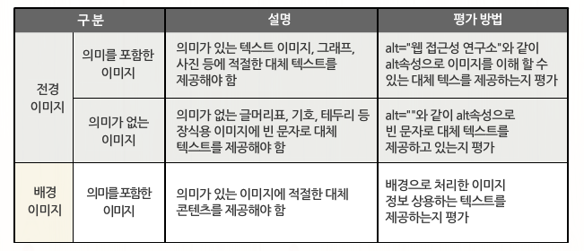
- 가. 이미지 관련하여 평가 방법
- 1. img 요소 외 alt 속성을 제공해야 하는 요소
- 예외적으로 img 요소가 아닌 요소에 alt 속성을 사용하는 경우
- <input type="image" alt="xxx">
- <area alt="xxx">
- 반드시 alt 속성으로 대체 텍스트를 제공
- 2. 전경 이미지, 배경 이미지 구분 방법
2. 자막 제공
- 가. 자막제공 평가 방법
- (검사항목2) : 멀티미디어 콘텐츠에는 자막, 원고 또는 수화를 제공해야 한다.
- 주요 평가 요소 : 멀티미디어 콘텐츠와 동등한 내용 대체를 수단으로 제공하는가?
- 1. 동기화된 자막과 수화 제공
- 동여상 일부에 자막 또는 수화가 생략되었는지 평가
- 2. 원고 또는 대본 제공
- 3. 텍스트 영상에 대체 수단 제공
- 4. 음성 콘텐츠 대체 수단 제공
3. 색에 무관한 콘텐츠 인식
- 가. 색에 무관한 콘텐츠 인식 평가 방법
- (검사항목3) : 콘텐츠는 색에 관계없이 인식될 수 있어야 한다.
- 색맹, 색양 장애인 - 색 구별 X - 콘텐츠 인식 불가
- 색을 배제하여 콘텐츠를 인식 가능한지 평가 - 각각의 색상을 동일한 색상이라고 가정
- 1. 적색맹 시각에서 바라본 그래프
- 2. 패턴으로 구분한 사례
- 색을 배제하였을 때 콘텐츠
- 무늬로 구분한 콘텐츠
- 문자로 필수 사항을 제공
5. 검사 항목 (4,5,6,7,8) 평가 방법
1. 명확한 지시사항 제공
- 가. 명확한 지시사항의 평가 방법
- 검사항목 4 : 지시사항은 모양, 크기, 위치, 방향, 색, 소리 등에 관계없이 인식 될 수 있어야한다.
- 주요 평가 요소 : 특정 요소를 가리키거나 지시 사항을 전달하는 콘텐츠는 색, 크기, 모양, 위치 또는 소리 등을 무관하게 인식할 수 있는 수단을 제공하는가?
- 나. 지시사항 오류 예시
- 시각장애인이 접근 불가능한 예
- 동그란 버튼을 누르시오.
- 큰 버튼을 누르시오.
- 우측 상단 버튼을 누르시오.
- 붉은색 버튼을 누르시오.
- 청각장애인이 접근 불가능한 예
- 사운트 버튼을 클릭하신 후 들리는 소리를 듣고 보기를 선택하세요.
- 다. 위치 정보로 지시사항을 제공
- 시각장애인이 사용할 수 없으므로 잘못된 콘텐츠
2. 텍스트 콘텐츠의 명도 대비
- 가. 텍스트 콘텐츠의 평가 방법
- 검사항목 5 : 텍스트 콘텐츠와 배경 간의 명도 대비는 4.5대1 이상이어야 한다.
- 텍스트가 18pt 이상 또는 굵은 14p의 텍스트는 3:1
- 명도 대비가 낮으면 저시력, 고령자 뿐만 아니라 일반 사용자도 콘텐츠 인식에 어려움
- 단, 화면 확대가 가능하도록 구현한 콘텐츠의 모든 텍스트 콘텐츠(텍스트 및 텍스트 이미지 포함)는 명도를 3:1로 낮출 수 있음
- 나. 명도 대비 검사 도구 사용
- 전경색과 배경색을 선택하여, 명도 대치 기준을 준수 하는지 평가
- 다. 명도 대비 평가 대비 콘텐츠
- 웹페이지에 제공되는 콘텐츠(모든)를 평가
- 평가 제외
- 단순히 장식 목적으로만 사용한 텍스트
- 로고 또는 상호
- 마우스나 키보드 사용 시 명도 대비가 변화하는 콘텐츠
- 의도적으로 명도 대비를 낮춘 회색의 컨트롤
- 입력서식
- 명도 대비를 만족하지 않는 콘텐츠를 찾아야함
3. 배경음 사용금지
- 가. 자동 재생 금지의 평가 방법
- 검사항목 6 : 자동으로 재생되는 배경음을 사용하지 않아야 한다.
- 3초 미만 제공하거나 배경음을 제어할 수 있는 수단 혹은 배경음 제어로 이동하는 바로가기 링크를 제공
- 배경음은 화면낭독기의 음략에 영향을 주기 때문에 콘텐츠 인식을 방해
- 나. 배경음을 올바르게 제공한 경우
- 웹 페이지를 로딩하면 자동적으로 팡파르가 들린 후 종료된다.
- 웹 페이지를 로딩하면 대표이사가 "세상을 바꾸는 기업, 0000"라는 멘트가 한 번 제공된다.
- 웹 페이지를 로딩하면 "시작하려면 엔터키를 누르세요."라는 멘트가 한 번 제공된다.
- 웹 페이지를 로딩하면 자동으로 재생되는 경고 음석을 한 번만 제공한다.
- 다. 자동 재생되는 동영상 콘텐츠
- 동영상 콘텐츠가 자동으로 실행되는 경우
- 동영상은 정지상태로 제공되는지 여부
- 음성 콘텐츠도 정지상태로 제공되는지 여부
- 라. 마우스를 올렸을 때 자동 재생되는 콘텐츠
4. 키보드 사용 보장
- 가. 콘텐츠 간의 구분
- 검사 항목 7 : 이웃한 콘텐츠는 구분될 수 있어야 한다.
- 이웃한 콘텐츠를 아래 1가지 방법 이상으로 구분해야 함
- 테두리를 이용하여 구분함
- 콘텐츠 사이에 시작적인 구분선을 삽입하여 구분함
- 서로 다른 무늬를 이용하여 구분함
- 콘텐츠 배경색 간의 명도대비(채도)를 달리하여 구분함
- 줄 간격 및 글자 간격을 조절하여 구분함
- 기타 콘텐츠를 시각적으로 구분할 수 있는 방법 등
- 나. 콘텐츠 간의 구분 오류 예시
5. 초점 이동
- 가. 초점 이동의 평가 방법
- 검사 항목 9 : 키보드에 의한 초점은 논리적으로 이동하여 하며 시각적으로 구별할 수 있어야 한다.
- Tab키와 Shift + Tab키에 의한 초점 이동 순서가 논리적이며, 일관성 있는지 평가
- a, area, button, input, textarea 콘텐츠 요소에 초점이 논리적으로 이동되는지를 평가
- 나. 웹 브라우저별 초점 표시 방법
- 다. 초점이 보이지 않도록 구현한 소스
- ouyline:none을 사용하여 테두리가 보이지 않는 경우
- 초점 발생시 테두리가 보이지 않는 다면 오류로 평가
- 라. 비논리적 초점 이동
16. 검사 항목 (9, 10, 11, 12, 13)평가 방법
1. 응답시간 조절
- 가. 응답시간 조절의 이해
- (1) 응답시간 조절의 개념
- 시간제한이 있는 콘텐츠는 인식, 컨트롤을 사용자도 놓치는 정보가 없게 정지하거나 시간을 연장하는 방법을 제공하는 것
- 접근성 이슈
- 시각장애, 운동장애, 지적장애 - 전체내용을 파악하지 못함
- 나. 응답시간 조절의 준수기준
- 기준 : 시간제한이 있는 콘텐츠의 응답시간을 조절할 수 있도록 제공한 경우
- 다. 응답시간 조절의 오류유형
- 1. 페이지 재 이동 시, 회피할 수 있는 수단을 제공하지 않은 경우
- 2. 제한 시간을 연장하는 방법에 제한 시간이 있는 경우
- 라. 응답시간 조절의 검사내용
- 시간에 따라 변동하는 콘텐츠의 유/무 - 응답시간 조절 기능을 제공/동작여부
- 보안상의 문제로 시간제한이 필요한 경우, '연장 기능' 제공
- 예외 : 경매나 실시간 게임, 듣기평가용 콘텐츠 등
- 마. 응답시간 조절의 검사방법
- (1) 시간에 따라 변동하는 콘텐츠 확인
- 링크 - 중계 페이지 - 목적지 페이지
- 자동 전환 페이지가 제공된 경우
- 1. 자동 전환되는 페이지임을 인지할 수 있는 정보를 제공하였는지 확인
- 2. 시간 제어 버튼까지 이동하기에 충분한 시간이 제공되었는지 확인
- (2) 응답시간 조절 기능 제공 및 동작여부 확인
- 시간에 따라 변동되는 콘텐츠
- 응답시간 조절 기능을 제공
- 응답시간을 조절할 수 있는 기능이 마우스와 키보드를 통해 동작되는지
- 시간이 제한된 콘텐츠
- 응답시간 조절 기능을 제공
- 키보드나 마우스로 응답시간 조절 기능으로 이동하기까지 충분한 시간의 제공
- 서비스 특성상 시간을 제한하는 기능을 필수로 제공 하는 경우
- 경매, 온라인 게임등과 같이 시간에 민감한 경우
- 은행, 증권등과 같이 보안을 위해 시간을 제한하는 경우
2. 정지기능 제공
- 가. 정지기능 제공의 이해
- 검사항목 12. 정지기능 제공
- 자동으로 변경되는 콘텐츠는 움직임을 제어할 수 있어야 함
- 일정한 시간에 따라 콘텐츠의 내용이 갱신되는 경우
- 글을 읽는 속도가 느린 사용자 - 시간을 제어할 수 있는 기능의 제공 유/무
- 운동장애 - 시간을 제어할 수 있는 기능의 제공 유/무
- 나. 정지기능 제공의 준수기준
- 기준 : 자동으로 변경되는 콘텐츠의 움직임을 제어할 수 있도록 제공한 경우
- 다. 정지기능 제공의 오류유형
- 1. 시간에 따라 변화하는 콘텐츠에 정지, 이전, 다음 기능이 없는 경우
- 2. 시간에 따라 변화하는 콘텐츠가 마우스와 키보드로 제어 불가능한 경우
- 라. 정지기능 제공의 검사내용
- 자동으로 변경되는 콘텐츠 확인
- 콘텐츠 제어기능 제공 / 동작 확인
- 마. 정지기능 제공의 검사방법
- (1) 시간에 따라 변화하는 콘텐츠가 제공된 경우, 정지, 이전, 다음 기능이 있는지 확인
- 키보드와 마우스로 평가
- 자동적으로 스크롤 되는 배너
- 자동 변경되는 실시간 검색순위
- 정비 버튼
- 이전, 다음 버튼
- 모든 콘텐츠에 접근할 수 있는 버튼
- (2) 시간에 따라 변화하는 콘텐츠의 경우, 마우스와 키보드로 제어가 가능한지 확인
- 자동으로 움직이는 콘텐츠에 키보드 진입 시 - 정지 기능을 제공한 것으로 인정
- 마우스 올렸을 때 - 정지 기능을 제공한 것으로 인정
3. 깜빡임과 번쩍임 사용제한
- 가. 깜빡임과 번쩍임 사용 제한의 이해
- 검사항목 13. 깜빡임과 번쩍임 사용 제한
- 초당 3~50회 깜빡임 반복되는 콘텐츠를 제공하면 안됨
- 광과민성 발작
- 초당 3회 이상 번쩍이거나 깜빡이는 콘텐츠가 제공되었는지 확인
- 나. 깜빡임과 번쩍임 사용 제한의 준수기준
- 1. 초당 3~50회 주기로 깜빡이거나 번쩍이는 콘텐츠를 제공하지 않은 경우
- 2. 깜빡임 3초 미만인 경우
- 다. 깜빡임과 번쩍임 사용 제한의 오류유형
- 사전 경고없이, 초당 3~50회 깜빡이는 콘텐츠가 존재할 경우
- 페이지 내, 초당 3~50회 주기로 깜빡이거나 번쩍이는 콘텐츠 제공
- 사전에 경고하고 깜빡임이나 번쩍임을 회피할 수 있는 수단을 제공
- 라. 깜빡임과 번쩍임 사용 제한의 검사방법
- (1) 페이지 내 초당 3~50회 주기로 깜빡이거나 번쩍이는 콘텐츠 확인
- (2) PEAT를 사용
- PEAT의 개념 : 정확한 수치를 판단하기 위해 깜빡임과 번쩍임 콘텐츠를 확인할 수 있는 툴
- 초당 3회 이상 깜빡이거나 번쩍이는 콘텐츠에 해당하는지 명확히 평가하기 어려움
4. 반복영역 건너뛰기
- 가. 반복영역 건더뛰기의 이해
- 검사항목 14. 반복영역 건너뛰기
- 콘텐츠의 반복되는 영역은 건너뛸 수 있어야 함
- 일반인 - 마우스 삽화 - 1번
- 시각장애, 운동장애 - 탭키 삽화 - 수십, 수백 번
- 건너뛰기 링크
- 나. 반복영역 건너뛰기의 준수기준
- 다. 반복영역 건너뛰기의 오류유형
- 1. 건너뛰기를 제공하지 않은 경우
- 2. 건너뛰기 링크는 제공하고 있으나 동장이 안되는 경우
- 라. 반복영역 건너뛰기의 검사내용
- 건너뛰기 링크를 제공하였는지 확인
- 본문으로 이동할 수 있는 기능이 작동하는지 확인
- 너무 많은 바로가기는 제공하지 않았는지 확인
- 화면에 보이도록 제공되었는지 확인
- 마. 반복영역 건너뛰기의 검사방법
- (1) 웹 브라우저에서 제공하는 CSS를 제거 기능을 통해 CSS 스타일을 제거
- 개발자 도구의 CSS 제거기능
- 파이어 폭스의 Web Developer 확장기능
- (2) CSS제거 후 표기되는 화면에서 건너뛰기 링크 확인
- 건너뛰기 링크의 개념
- 로고, 검색창, 서비스 메뉴 등 페이지마다 반복되는 영역을 건너뛰고 주요 콘텐츠로 바로 이동하는 링크(페이지 시작 부분에 위치해야 함)
- 건너뛰기 링크의 존재여부
- 건너뛰기 링크가 페이지 최상단 위치 여부
- 건너뛰기 링크의 총 개수
- (3) 건너뛰기 링크가 정상적으로 작동하는지 링크를 선택하여 본문으로 이동괴는지 확인
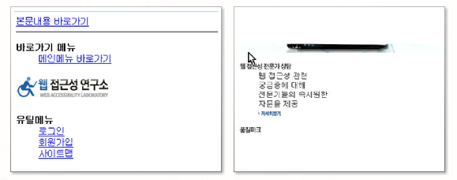
- (4) 본문 바로가기 링크가 화면에 보이도록 제공되었는지 페이지 내에서 확인
- 화면 내에 본문 바로가기 링크를 항상 표시되도록 하며, 탭 이동 시 화면에 표시되는지 확인
- 바. 반복영역 건너뛰기의 주의사항
- 1. 반복되는 영역을 건너뛰고 본문으로 바로 갈 수 있는 기능의 제공
- 2. <body>요소 다음으로 제공
- 3. Display : none; 속성과 같이 CSS를 통해 화면에서 숨기는 경우, CSS를 제거한 상태에서는 키보드 접근도 가능하고 동장에도 문제가 없지만, CSS가 적용된 상태에서는 시각적으로 표시도 되지 않음
- 4. 스크린리더 뿐만 아니라 일반적인 키보드 접근이 불가함
- 5. 건너뛰기 링크가 필요없는 경우지만 제공된 경우, 불필요한 건너뛰기 링크라도 제공된 건너뛰기 기능이 동작이 되지 않으면 감점
5. 제목 제공
- 가. 제목 제공의 이해
- 검사항목 15. 제목 제공
- 페이지, 프레임, 콘텐츠 블록에는 적잘한 제목을 제공해야 함
- 나. 제목 제공 준수 기준
- 기준 : 페이지, 프레임, 콘텐츠 블록에 적절한 제목을 제공한 경우
- 페이지 제목에 title 속성 미 제공, 내용과 다른 의미의 제목을 사용한 경우
- 페이지 제목에 반복되는 특수문자를 제공한 경우
- 페이지 제목의 분류가 더 가능하나, 상위 범주로 제목을 제공한 경우
- <frame>, <iframe>, <frameset> 요소의 title 속성이 없거나, 속성 값을 비워 둔 경우, 내용이 부적절한 경우
- 내용 똔느 기능이 없는 프레임 <title>을 비워두거나, 제공하지 않은 경우
- 콘텐츠 블록에 <h1~6>을 사용하여 제목을 제공하지 않은 경우
- 다. 제목 제공의 검사내용
- 적절한 제목을 제공하였는지 확인
- 프레임에 마다 각 프레임을 설명하는 간단명료한 제목을 제공하였는지 확인
- 콘텐츠 블록에<h1~6> 요소를 이용하여 적절한 제목을 제공하였는지 확인
- 라. 제목 제공의 검사방법
- (1) 웹페이지 제목 확인
- 사용자가 가장 먼저 인식하는 정보
- 페이지의 성격과 콘텐츠의 냐용이 잘 드러나 있는지 확인
- 미준수 : 사이트 명 등을 동일 제목으로 제공시
- 미준수 : 제목을 꾸미기 위해 특수문자를 중복 사용
- (2) 프레임 제목 확인
- 외부 페이지의 콘텐츠를 쉽게 파악할 수 있는 내용 (프레임이 있을 경우, title 속성 이용)
- 페이지 소스 확인
- <frame>, <iframe>, <frameset> 검색
- (3) 콘텐츠 블록 확인
- 마. 제목 제공의 주의사항
- 1. 프레임 제목으로 포함된 콘텐츠를 유추할 수 있는 간결한 제목 제공
- 게시판의 '목록, 읽기, 쓰기' 페이지의 젬고을 목록, 읽기, 쓰기의 상태를 페이지 제목을 통해 구분할 수 있도록 제공
- 3. 여러 단계로 구성되어있는 페이지의 경우, 페이지 제목만으로도 각 단계를 인지할 수 있도록 제공
17. 검사 항목 (14, 15, 16, 17, 18) 평가방법
1. 적절한 링크 텍스트와 기본언어 표시
- 검사항목 16. 적절한 링크 텍스트
- 공지사항 (더보기) - 화면 낭독기 (더보기) - 시각장애인
- 목적지를 구체적으로 제공
- 보조기기의 탐색 순서에 따라 앞뒤 문맥으로 목적지를 알게 함
- 가. 적절한 링크 텍스트의 검사 개요
- 1. 준수 기준 : 링크 텍스트의 용도나 목적을 이해할 수 있도록 제공한 경우 준수한 것으로 인정
- 2. 오류 유형 : 목적이나 용도를 알기 어려운 링크 텍스트를 제공한 경우
- 3. 검사 내용 : 링크 텍스트만으로도 링크의 목적이나 목표를 이해할 수 있는지 확인
- 나. 적절한 링크 텍스트의 검사 방법
- 요소 검사
- 출력되는 화면 : 보다 자세한 내용은 사이트 이용방법을 확인하세요.
- 해당 HTML 코드 : 보다 자세한 내용은 <a href="guide.html" title="사이트 이용방법 페이지로 이동"></a>을 확인하세요.
- Openwax를 이용하는 방법
2. 사용자 요구에 따른 실행
- 검사항목 18. 사용자 요구에 따른 실행
- 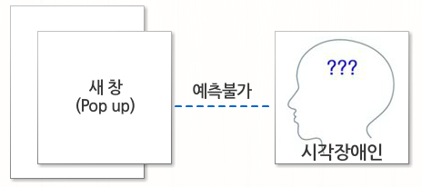
- 사용자가 의도하지 않은 기능은 실행되지 않아야 함
- 변화 발생 시 사전 공지 또는 사용자의 선택에 따라 변화가 발생하도록 기능 제공
- 1. 준수 기준
- 사용자가 의도하지 않은 기능이 자동 실행되지 않도록 제공한 경우 준수
- 링크나 버튼 등으로 견결된 콘텐츠가 새 창으로 제공될 경우 사전에 안내
- 2. 오류 유형
- 16-1 : 사용자가 실행하지 않은 상황에서 예측하지 않은 새 창이 열리는 경우
- 16-2 : 웹 사이트 초기화면(메인 페이지)에 팝업 창(레이어 팝업 포함)을 제공
- 16-3 : 사용자가 의도하지 않은 초점 변화가 발생하는 경우
- 16-4 : 체크상자의 선택, 텍스트 입력 서식의 값 변경만으로 값이 제출되어 문맥이 바뀌는 경우
- 3. 검사 내용
- 초점에 따른 변화나 입력에 따른 변화 확인 - 온라인 서식을 선택하는 것만으로 자동 실행
- 새 창 및 팝업이 경고없이 열리는 지 확인 - 새 창 열림, 자동으로 메뉴 실행, 페이지 갱신, 자동 재생 콘텐츠
- 나. 사용자 요구에 따른 실행 검사 방법
- 1. 메인 페이지의 자동 팝업 창 검사
- 2. 새 창 알림 확인을 위한 요소 검사
- 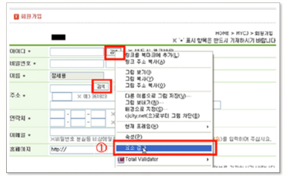
- target="_black"
- window.open()
- title="새 창"
- alt="새 창"
- 3. 자동으로 실행되는 온라인 서식 검사
- 4. openwax를 이용하는 방법
3. 콘텐츠의 선형화와 표의 구성
- 콘텐츠는 논리적인 순서로 제공해야 한다
- 1. 준수기준
- 콘텐츠의 순서가 논리적으로 선형화되어 제공한 경우 준수한 것으로 인정
- (콘텐츠의 선형구조) 콘텐츠의 논리적인 순서에 따라 제공
- 스타일의 영향 없이 콘텐츠 자체만으로도 내용을 파악할 수 있고 원하는 기능의 의미를 이해하고 수항할 수 있게 제공하는 것
- 화면 낭독기 점자 정보 단말기 - (비 논리적 구성) - 시각장애인
- 2. 오류 유형
- 17-1 : 계층 구조가 명백하게 필요한 콘텐츠를 중첩 마크업을 이용하여 표현하지 않은 경우
- 17-2 : 제목 - 내용으로 구성된 콘텐츠 목록의 배치가 분리되어 내용을 직관적 이해가 불가능한 경우
- 3. 검사 내용
- CSS를 제거하여 상에서 하,좌에서 우의 경우처럼 규칙적인 순서의 논리적 구성으로 제공되었는지 확인
- 2단 이상의 메뉴일 경우 상위메뉴에 따른 하위메뉴 이동 후 다음 차순위 상위 메뉴로 이동하는지 확인
- 제목과 내용이 연속되어 있는 구조의 콘텐츠는 제목과 내용의 연관관계를 이해할 수 있는지 확인
- 나. 콘텐츠의 선형구조 검사 방법
- 1. CSS 스타일 제거
- 2. CSS 제거된 화면에서 콘텐츠 순서 확인
- 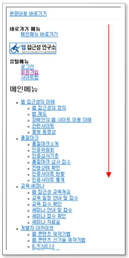화면 낭독기 점자 정보 단말기
- 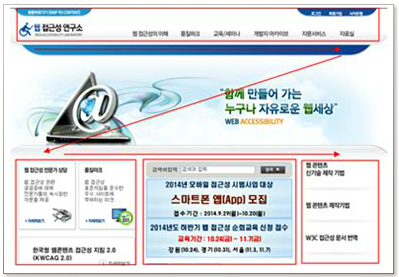
- 3. 탭 메뉴가 논리적으로 구성되었는지 확인
- 4. 메뉴의 계층 표현 확인
18. 검사항목(19, 20, 21, 22) 평가 방법
1. 레이블 제공
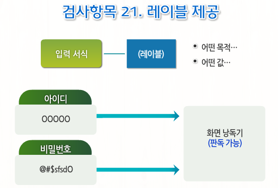
- 가. 검사 개요
- 1. 준수기준
- 입력 서식에 대응하는 레이블을 제공한 경우 준수한 것으로 인정
- 2. 오류 유형
- 3. 검사 내용
- 입력서식에 <label>요소나 title 속성을 이용하여 레이블을 제공하였는지 확인
- <label>요소를 이용하여 레이블을 제공한 경우, label for="값" 과 입력서식의 id="값"이 적절히 짝지어졌는지 확인
- 4. 레이블을 제공해야 하는 대표적인 ㅇ형
- 나. 검사 방법
- 1. 페이지 소스에서 레이블 제공 여부 검사
- 2. label 요소의 for와 id 값 비교
- 3. 개발자 도구의 요소 선택자를 이용하여 검사
- 4. openwax를 이용하는 방법
2. 오류 정정
- 검사항목 22. 오류 정정
- 가. 검사 개요
- 1. 준수 기준
- 입력 서식에 대응하는 레이블을 제공한 경우 준수한 것으로 인정
- 2. 오류 유형
- 3. 검사 내용
- 입력 값을 잘못 기재하였을 경우, 오류내용과 수정방법을 제공하였는지 확인하고 다시 인력을 할 수 있도록 오류 입력 서식으로 키보드 포커스가 이동하는지 확인
- 오류 내용 확인 후 기재하였던 입력 내용이 삭제되는지 확인
- 나. 검사 방법
3. 마크업 오류 방지
- 검사항목 23. 마크업 오류 방지
- 마크업 언어 - (열고 닫음 / 중첩 관계 / 속성 선언) - 문법 오류 방지
- 가. 검사 개요
- 1. 준수 기준
- 마크업 언어 요소의 열고 닫음, 중첩 관계 및 속성 선언에 오류 없이 제공한 경우 준수한 것으로 인정
- 2. 오류 유형
- 3. 검사 내용
- 해당 마크업 언어의 문법을 최대한 준수하여 제공하였는지 확인
- 열고 닫음, 중첩관계, 속성 선언에 대한 오류는 없는지 확인
- 나. 검사 방법
- 1. W3C의 Markup Validation Service를 통해 확인
- (가) http://validator.w3.org/로 접속 후 Address 편집창에 웹 주소 기재 후 check
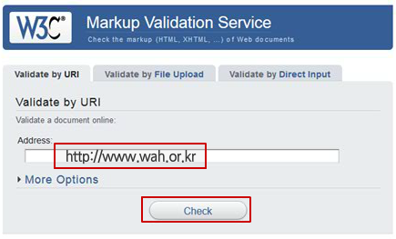
- (나) 마크업 문법 준수 결과 확인 후 Erorr가 있는 경우, Validation Output의 내용을 확인
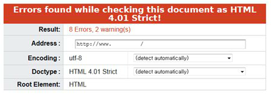
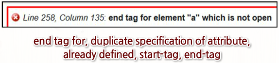
- 2. Openwax를 이용하는 방법
4. 웹 애플리케이션 접근성 준수
- 검사항목 24. 웹 애플리케이션 접근성 준수
- 가. 검사 개요
- 1. 준수 기준
- 웹 애플리케이션의 자체 접근성을 준수하여 제공한 경우 준수한 것으로 인정
- 2. 오류 유형
- 24-1 : 웹 애플리케이션이 자체적인 접근성이 없으며 사용자가 선택할 수 있는 대체 콘텐츠가 존재하지 않거나 대체 콘텐츠를 제공하더라도 핵심기능을 동등하게 제공하지 못한 경우
- 나. 검사 방법
- 1. 웹 페이지에서 마우스 오른족 클릭 시 나오는 팝업 메뉴 확인
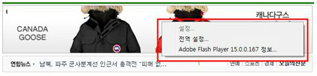
- 2. 부가 애플리케이션의 기능을 찾아 자체적인 접근성 제공 여부 확인
- 이미지에 대한 대체 텍스트 제공 여부
- 키보드에 대한 논리적 이동 및 초점 표시 확인
- 키보드로 기능을 사용할 수 있는지 확인
- 보조기기 (스크린리더 등)와의 지원 여부
- 3. 동등한 대체 콘텐츠 제공 여부 확인
- Flash를 사용할 수 있는 경우
- Flash를 사용할 수 없는 경우
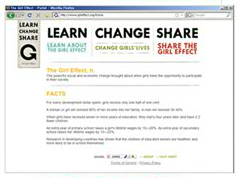
- 4. 접근성 검사도구 - UIA(User Interface Automation) Verify 사용
- 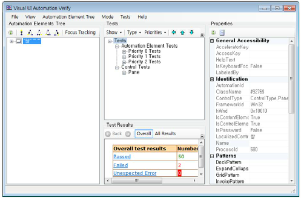
- 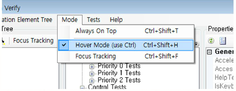

- 플래시의 대체 텍스트가 바르게 적용된 예
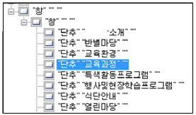
- 플래시의 대체 텍스트가 제공되지 않은 예
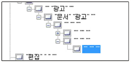
- 5. 주의 사항
- 자바 스크립트를 지우너하지 않는 환경에서는 평가하지 않음
- 직접적으로 접근성을 구현하기 어려운 경우 대체 수단을 제공해서 우회할 수 있는 경로를 제공하여야 함 (단, 접근성 구현과 동등한 수준으로 제공)
- 플래시 버전은 그대로 두고, 플래시를 이용하지 못하는 사용자에게 일반 HTML로 제공된 대체 수단을 제공하여 이용할 수 있다면 준수로 인정